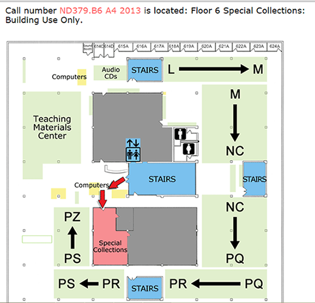
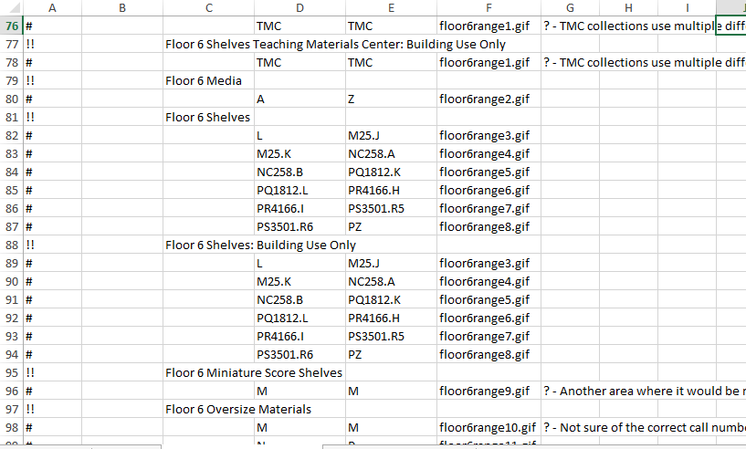
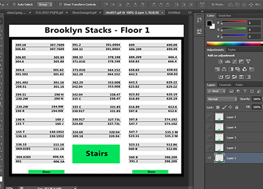
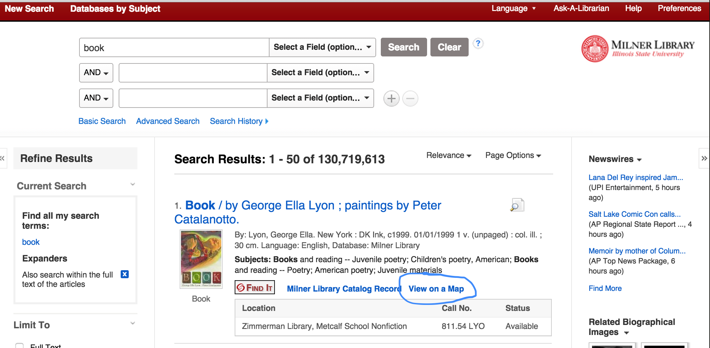
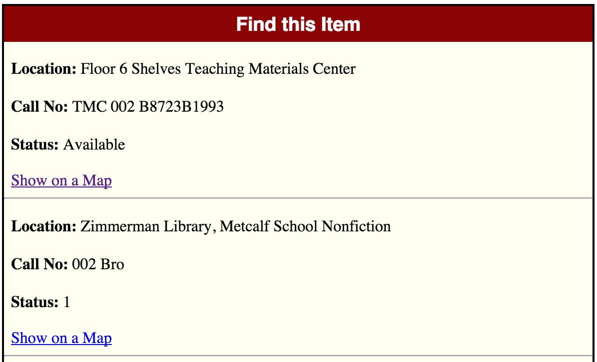

Maps of the stacks in the catalog
Many libraries have implemented different versions

Needs Analysis
The problem: Items move, maps become outdated.
Partial solutions:
- Automate updates
- Require minimal technical skill to perform updates
- Leave logic untouched during update process
NaviStax
An open-source collection of scripts to address these issues
- For the DIYer
- Less reinvention of the wheel
- Moving towards full automation of the update process
The non-programmer's perspective

The image editor's perspective
- Change text in background image
- Use saved script to replace background in all images in folder

The sysadmin's perspective
- Run generate.py
- Upload files
- < 1 minute of work
Generate.py
The workhorse
- Run each call number in spreadsheet through formatting algorithm - adapted from Koha's sorting algorithm
- Output index.php or getMap.php file with each location/shelf range as an object
- Append logic and display code
The EBSCO Discovery Service implementation
Constraints
- Scripts OK, but must work around many other scripts
- Everything must be hosted externally (at least is this version)
- Extra testing required by EBSCO - but they're very helpful
Step 1
Get bib id # and make sure it's a local resource with JQuery on load.
quot;term":"milner.1266189","resultListId
Step 2
Display link that calls intermediate page

Step 3
When link is clicked, display intermediate page.

Step 4
When item link is clicked, call formURL.php and pass ID #
$url = 'http://vufind.carli.illinois.edu/vf-isu/Record/AJAX?method=GetHoldings&id=isu_' . $id;
Step 5
Send call to server, parse result
<?xml version="1.0" encoding="UTF-8"?>
<AJAXResponse>
<result><![CDATA[<table class="holdingsdata"><tr class="evenrow"><td class="col1">Location: </td><td class="col2">Zimmerman Library, Metcalf School Nonfiction</td></tr>
<tr class="oddrow"><td valign="top" class="col1">Call Number: </td><td class="col2">811.54 LYO<br/><a target="_blank" href=""onclick="showSmsForm('Book+%...></result></AJAXResponse>
Step 6
Parse response and display correct map.
The EDS Implementation
Keeping it up-to-date
- Setup is more complex than static catalog link, but updating is simple
- Run generate.py and upload all files - may need to send to EBSCO
The Logic
For EDS/VuFind
- Each range is an object with call number, location, note attributes. Put all location objects in an array
- JavaScript in EDS widget gets consortial ID # of item
- When "Find on a Map" button is clicked, intermediate interface is presented to show all copies
- When an item is chosen, ID # is sent to VuFind function in AJAX request
- Return value is parsed, values put into JSON
- Object is compared to objects in array and when a match is found, image and info are displayed